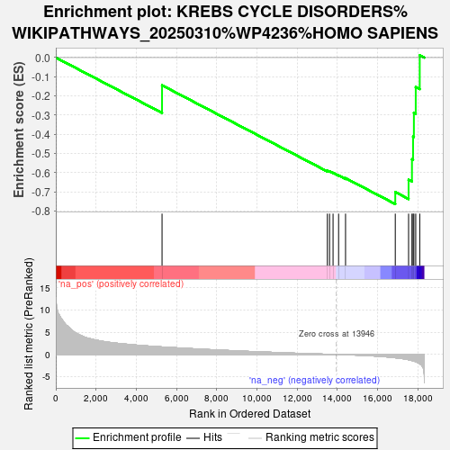
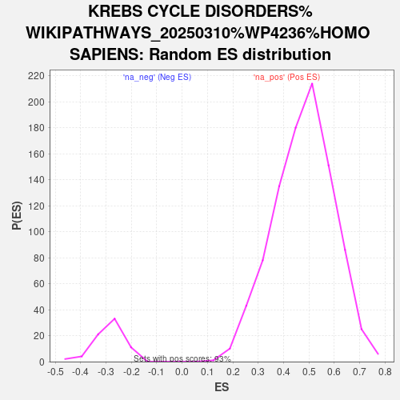

| | | Dataset | ranked_genes |
| Phenotype | NoPhenotypeAvailable |
| Upregulated in class | na_neg |
| GeneSet | KREBS CYCLE DISORDERS%WIKIPATHWAYS_20250310%WP4236%HOMO SAPIENS |
| Enrichment Score (ES) | -0.7628095 |
| Normalized Enrichment Score (NES) | -2.6568758 |
| Nominal p-value | 0.0 |
| FDR q-value | 0.0 |
| FWER p-Value | 0.0 |
Table: GSEA Results Summary

Fig 1: Enrichment plot: KREBS CYCLE DISORDERS%WIKIPATHWAYS_20250310%WP4236%HOMO SAPIENS
Profile of the Running ES Score & Positions of GeneSet Members on the Rank Ordered List
| SYMBOL | RANK IN GENE LIST | RANK METRIC SCORE | RUNNING ES | CORE ENRICHMENT | | 1 | LDHA | 5284 | 1.696 | -0.1445 | No |
| 2 | PDHX | 13506 | 0.050 | -0.5890 | No |
| 3 | LDHC | 13614 | 0.035 | -0.5919 | No |
| 4 | SUCLA2 | 13789 | 0.016 | -0.6000 | No |
| 5 | SUCLG2 | 14064 | -0.013 | -0.6138 | No |
| 6 | DHTKD1 | 14410 | -0.057 | -0.6279 | No |
| 7 | PCK2 | 16883 | -0.735 | -0.7004 | Yes |
| 8 | SUCLG1 | 17545 | -1.178 | -0.6364 | Yes |
| 9 | DLST | 17713 | -1.363 | -0.5298 | Yes |
| 10 | GPT | 17768 | -1.434 | -0.4109 | Yes |
| 11 | FH | 17809 | -1.486 | -0.2869 | Yes |
| 12 | LDHB | 17901 | -1.631 | -0.1534 | Yes |
| 13 | MPC1 | 18100 | -2.081 | 0.0126 | Yes |
Table: GSEA details [plain text format]

Fig 2: KREBS CYCLE DISORDERS%WIKIPATHWAYS_20250310%WP4236%HOMO SAPIENS: Random ES distribution
Gene set null distribution of ES for KREBS CYCLE DISORDERS%WIKIPATHWAYS_20250310%WP4236%HOMO SAPIENS